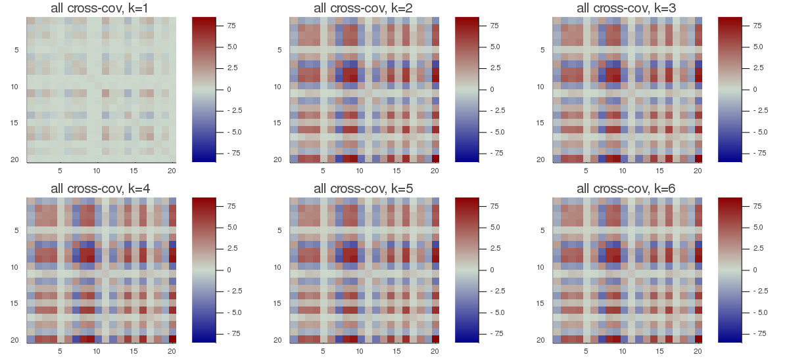
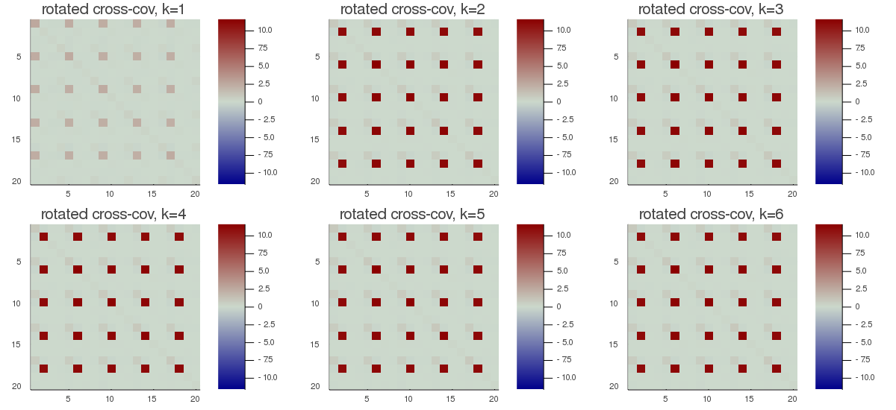

mAJD
Multiple Approximate Joint Diagonalization (MAJD) is the utmost general diagonalization prodedure implemented in Diagonalizations.jl. It generalizes the AJD to the case of multiple datasets ($m>1$) and the gMCA/gCCA to the case of multiple observations ($k>1$). Therefore, it suits the situation $m>2$ (multiple datasets) and $k>2$ (multiple observations) at once.
Let ${X_{l1},...,X_{lm}}$ be $k$ sets of $m$ data matrices of dimension $n⋅t$ each, indexed by $l∈[1...k]$.
From these data matrices let us estimate
$C_{lij}=\frac{1}{t}X_{li}X_{lj}^H$, for all $l∈[1...k]$ and $i,j∈[1...m]$, $\hspace{1cm}$ [majd.1]
i.e., all covariance ($i=j$) and cross-covariance ($i≠j$) matrices for all $l∈[1...k]$.
The MAJD seeks $m$ matrices $F_1,...,F_m$ diagonalizing as much as possible all products
$F_i^H C_{lij} F_j$, for all $l∈[1...k]$ and $i≠j∈[1...m]$ $\hspace{1cm}$ [majd.2]
or all products
$F_i^H C_{lij} F_j$, for all $l∈[1...k]$ and $i,j∈[1...m]$, $\hspace{1cm}$ [majd.3]
depending on the chosen model (see argument fullModel below).
pre-whitening for MAJD
Pre-whitening can be applied. In this case, first $m$ whitening matrices $W_1,...,W_m$ are found such that
$W_i^H\Big(\frac{1}{k}\sum_{l=1}^kC_{kii}\Big)W_i=I$, for all $i∈[1...m]$ $\hspace{1cm}$
then the following transformed AJD problem if solved for $U_1,...,U_m$:
$U_i^H(W_i^HC_{lij}W_j)U_j≈Λ_{lij}$, for all $l∈[1...k]$ and $i,j∈[1...m]$.
Finally, $F_1,...,F_m$ are obtained as
$F_i=W_iU_i$, for $i∈[1...m]$. $\hspace{1cm}$
Notice that:
- matrix $W$ may be taken rectangular so as to engender a dimensionality reduction at this stage. This may improve the convergence behavior of AJD algorithms if the matrices ${C_{lii}}$ are not well-conditioned.
- if this two-step procedure is employed, the final matrices $F_1,...,F_m$ are never orthogonal, even if the solving AJD algorithm constrains the solutions within the orthogonal group.
permutation for MAJD
As usual, the approximate diagonalizers $F_1,...,F_m$ are arbitrary up to a scale and permutation. in MAJD scaling is fixed by appropriate constraints. For the remaining sign and permutation ambiguities, Diagonalizations.jl attempts to solve them by finding signed permutation matrices for $F_1,...,F_m$ so as to make all diagonal elements of [gmca.2] or [gmca.3] positive and sorted in descending order.
Let
$λ=[λ_1...λ_n]$ $\hspace{1cm}$ [majd.4]
be the diagonal elements of
$\frac{1}{k(m^2-m)}\sum_{j=1}^k\sum_{i≠j=1}^m(F_i^H C_{lij} F_j)$ $\hspace{1cm}$ [majd.5]
and $σ_{TOT}=\sum_{i=1}^nλ_i$ be the total variance.
We denote $\widetilde{F}_i=[f_{i1} \ldots f_{ip}]$ the matrix holding the first $p<n$ column vectors of $F_i$, where $p$ is the subspace dimension. The explained variance is given by
$σ_p=\frac{\sum_{i=1}^pλ_i}{σ_{TOT}}$ $\hspace{1cm}$ [majd.6]
and the accumulated regularized eigenvalues (arev) by
$σ_j=\sum_{i=1}^j{σ_i}$, for $j=[1 \ldots n]$, $\hspace{1cm}$ [majd.7]
where $σ_i$ is given by Eq. [majd.6].
Solution
There is no closed-form solution to the AJD problem in general. See Algorithms.
Constructors
One constructor is available (see here below). The constructed LinearFilter object holding the MAJD will have fields:
.F: vector of matrices $\widetilde{F}_1,...,\widetilde{F}_m$ with columns holding the first $p$ eigenvectors in $F_1,...,F_m$, or just $F_1,...,F_m$ if $p=n$
.iF: the vector of the left-inverses of the matrices in .F
.D: the leading $p⋅p$ block of $Λ$, i.e., the elements [majd.4] associated to the matrices in .F in diagonal form.
.eVar: the explained variance [majd.6] for the chosen value of $p$.
.ev: the vector $λ$ [majd.4].
.arev: the accumulated regularized eigenvalues in [majd.7].
Diagonalizations.majd — Functionfunction majd(𝑿::VecVecMat;
covEst :: StatsBase.CovarianceEstimator = SCM,
dims :: Into = ○,
meanX :: Into = 0,
algorithm :: Symbol = :NoJoB,
fullModel :: Bool = false,
preWhite :: Bool = false,
sort :: Bool = true,
init :: VecMato = ○,
tol :: Real = 0.,
maxiter :: Int = _maxiter(algorithm, eltype(𝑿[1][1])),
verbose :: Bool = false,
threaded :: Bool = true,
eVar :: TeVaro = _minDim(𝑿),
eVarC :: TeVaro = ○,
eVarMeth :: Function = searchsortedfirst,
simple :: Bool = false)
Return a LinearFilter object.
Multiple Approximate Joint Diagonalization of the $k$ sets of $m$ data matrices 𝐗 using the given solving algorithm (NoJoB by default).
If fullModel is true, the [gmca.3] problem here above is solved, otherwise (default), the [gmca.2] problem here above is solved.
If preWhite the two-step procedure explained here above in the section pre-whitening for MAJD is used. Dimensionality reduction can be obtained at this stage using arguments eVarC and eVarMeth.
The default values are:
eVarCis set to 0.999eVarMeth=searchsortedfirst.
If sort is true (default), the column vectors of the matrices $F_1,...,F_m$ are signed and permuted as explained here above in permutation for MAJD, otherwise they will have arbitrary sign and will be in arbitrary order.
If verbose is true (false by default), the convergence attained at each iteration will be printed in the REPL.
eVar and eVarMeth are used to define a subspace dimension $p$ using the accumulated regularized eigenvalues in Eq. [gmca.7]
The default values are:
eVaris set to the minimum dimension of the matrices in𝐗eVarMeth=searchsortedfirst.
If simple is set to true, $p$ is set equal to the dimension of the covariance matrices that are computed on the matrices in 𝐗, which depends on the choice of dims, and only the fields .F and .iF are written in the constructed object. This corresponds to the typical output of approximate diagonalization algorithms.
if threaded=true (default) and the number of threads Julia is instructed to use (the output of Threads.nthreads()), is higher than 1, solving algorithms supporting multi-threading run in multi-threaded mode. See Algorithms and these notes on multi-threading.
Examples:
using Diagonalizations, LinearAlgebra, PosDefManifold, Test
## Create data for testing the case k>1, m>1 ##
# `t` is the number of samples,
# `m` is the number of datasets,
# `k` is the number of observations,
# `n` is the number of variables,
# `noise` must be smaller than 1.0. The smaller the noise, the more data are correlated
# Output k vectors of m data data matrices
function getData(t, m, k, n, noise)
# create m identical data matrices and rotate them by different
# random orthogonal matrices V_1,...,V_m
𝐕=[randU(n) for i=1:m] # random orthogonal matrices
# variables common to all subjects with unique variance profile across k
X=[(abs2.(randn(n))).*randn(n, t) for s=1:k]
# each subject has this common part plus a random part
𝐗=[[𝐕[i]*((1-noise)*X[s] + noise*randn(n, t)) for i=1:m] for s=1:k]
return 𝐗, 𝐕
end
function getData(::Type{Complex{T}}, t, m, k, n, noise) where {T<:AbstractFloat}
# create m identical data matrices and rotate them by different
# random orthogonal matrices V_1,...,V_m
𝐕=[randU(ComplexF64, n) for i=1:m] # random orthogonal matrices
# variables common to all subjects with unique variance profile across k
X=[(abs2.(randn(n))).*randn(ComplexF64, n, t) for s=1:k]
# each subject has this common part plus a random part
𝐗=[[𝐕[i]*((1-noise)*X[s] + noise*randn(ComplexF64, n, t)) for i=1:m] for s=1:k]
return 𝐗, 𝐕
end
# REAL data
# do joint blind source separation of non-stationary data
t, m, n, k, noise = 200, 5, 4, 6, 0.1
Xset, Vset=getData(t, m, k, n, noise)
𝒞=Array{Matrix}(undef, k, m, m)
for s=1:k, i=1:m, j=1:m 𝒞[s, i, j]=(Xset[s][i]*Xset[s][j]')/t end
aX=majd(Xset; fullModel=true, algorithm=:OJoB)
# the spForm index of the estimated demixing matrices times the true
# mixing matrix must be low
@test mean(spForm(aX.F[i]'*Vset[i]) for i=1:m)<0.1
# test the same using NoJoB algorithm
aX=majd(Xset; fullModel=true, algorithm=:NoJoB)
@test mean(spForm(aX.F[i]'*Vset[i]) for i=1:m)<0.1
# plot the original cross-covariance matrices and the rotated
# cross-covariance matrices
# Get all products 𝐔[i]' * 𝒞[l, i, j] * 𝐔[j]
function _rotate_crossCov(𝐔, 𝒞, m, k)
𝒮=Array{Matrix}(undef, k, m, m)
@inbounds for l=1:k, i=1:m, j=1:m 𝒮[l, i, j]=𝐔[i]'*𝒞[l, i, j]*𝐔[j] end
return 𝒮
end
# Put all `k` cross-covariances in a single matrix
# of dimension m*n x m*n for visualization
function 𝒞2Mat(𝒞::AbstractArray, m, k)
n=size(𝒞[1, 1, 1], 1)
C=Matrix{Float64}(undef, m*n, m*n)
for i=1:m, j=1:m, x=1:n, y=1:n C[i*n-n+x, j*n-n+y]=𝒞[k, i, j][x, y] end
return C
end
using Plots
Cset=[𝒞2Mat(𝒞, m, s) for s=1:k]
Cmax=maximum(maximum(abs.(C)) for C ∈ Cset)
h1 = heatmap(Cset[1], clim=(-Cmax, Cmax), yflip=true, c=:bluesreds, title="all cross-cov, k=1")
h2 = heatmap(Cset[2], clim=(-Cmax, Cmax), yflip=true, c=:bluesreds, title="all cross-cov, k=2")
h3 = heatmap(Cset[2], clim=(-Cmax, Cmax), yflip=true, c=:bluesreds, title="all cross-cov, k=3")
h4 = heatmap(Cset[2], clim=(-Cmax, Cmax), yflip=true, c=:bluesreds, title="all cross-cov, k=4")
h5 = heatmap(Cset[2], clim=(-Cmax, Cmax), yflip=true, c=:bluesreds, title="all cross-cov, k=5")
h6 = heatmap(Cset[2], clim=(-Cmax, Cmax), yflip=true, c=:bluesreds, title="all cross-cov, k=6")
📈=plot(h1, h2, h3, h4, h5, h6, size=(1200,550))
# savefig(📈, homedir()*"\Documents\Code\julia\Diagonalizations\docs\src\assets\FigmAJD1.png")
𝒮=_rotate_crossCov(aX.F, 𝒞, m, k)
Sset=[𝒞2Mat(𝒮, m, s) for s=1:k]
Smax=maximum(maximum(abs.(S)) for S ∈ Sset)
h11 = heatmap(Sset[1], clim=(-Smax, Smax), yflip=true, c=:bluesreds, title="rotated cross-cov, k=1")
h12 = heatmap(Sset[2], clim=(-Smax, Smax), yflip=true, c=:bluesreds, title="rotated cross-cov, k=2")
h13 = heatmap(Sset[2], clim=(-Smax, Smax), yflip=true, c=:bluesreds, title="rotated cross-cov, k=3")
h14 = heatmap(Sset[2], clim=(-Smax, Smax), yflip=true, c=:bluesreds, title="rotated cross-cov, k=4")
h15 = heatmap(Sset[2], clim=(-Smax, Smax), yflip=true, c=:bluesreds, title="rotated cross-cov, k=5")
h16 = heatmap(Sset[2], clim=(-Smax, Smax), yflip=true, c=:bluesreds, title="rotated cross-cov, k=6")
📉=plot(h11, h12, h13, h14, h15, h16, size=(1200,550))
# savefig(📉, homedir()*"\Documents\Code\julia\Diagonalizations\docs\src\assets\FigmAJD2.png")


In the bottom figures here above, the rotated cross-covariance matrices have the expected strip-diagonal form, that is, each block $F_i^T\frac{1}{t}(X_{li}X_{lj}^T)F_j$, for $l∈[1,...,k]$, $i,j∈[1,...,m]$, is approximately diagonal.
# COMPLEX data
# do joint blind source separation of non-stationary data
t, m, n, k, noise = 200, 5, 4, 6, 0.1
Xcset, Vcset=getData(ComplexF64, t, m, k, n, noise)
𝒞=Array{Matrix}(undef, k, m, m)
for s=1:k, i=1:m, j=1:m 𝒞[s, i, j]=(Xcset[s][i]*Xcset[s][j]')/t end
aXc=majd(Xcset; fullModel=true, algorithm=:OJoB)
# the spForm index of the estimated demixing matrices times the true
# mixing matrix must be low
@test mean(spForm(aXc.F[i]'*Vcset[i]) for i=1:m)<0.1
# test the same using NoJoB algorithm
aXc=majd(Xcset; fullModel=true, algorithm=:NoJoB)
@test mean(spForm(aXc.F[i]'*Vcset[i]) for i=1:m)<0.1